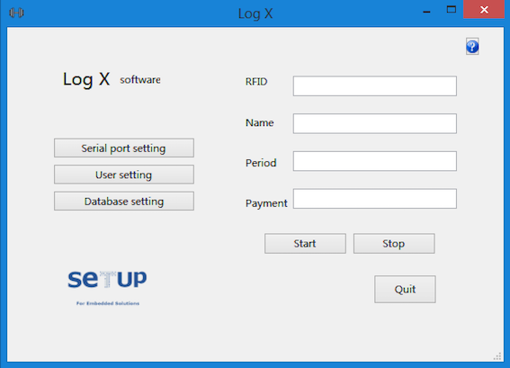
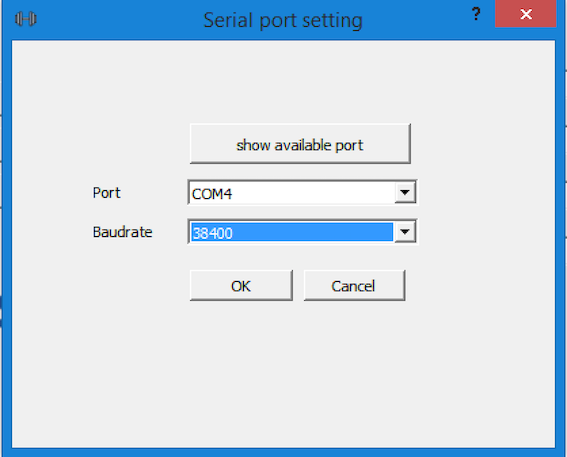
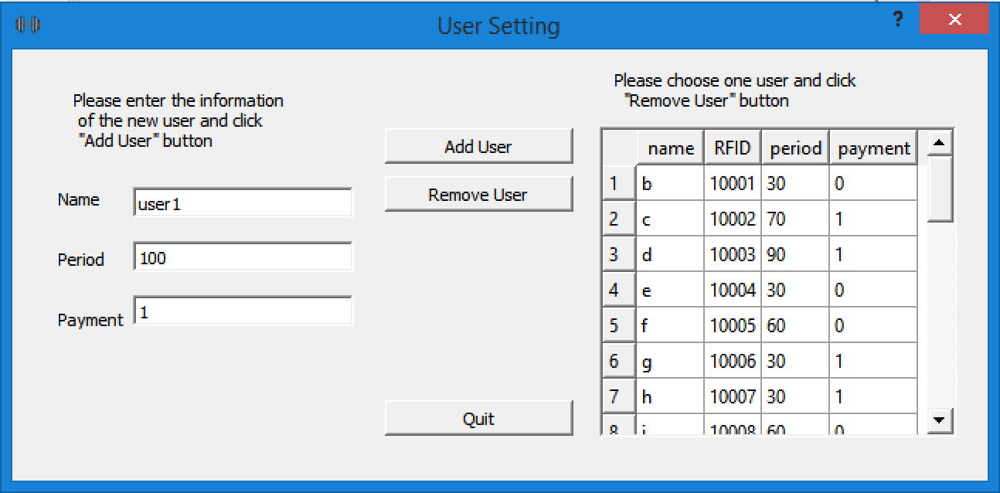
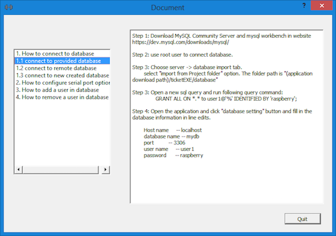

Ticket application is a QT GUI application. It communicate with ticket device with serial port, and it can query, insert, delete data in MySQL database.

The application will pop error message in the following situations:

You can single click show available port button and choose port and baudrate in Port and Baudrate comboboxs.
If successfully connect to the ticket device, it pops success message, otherwise it pops error message with error details.
You can enter the information of the database in Edits and click OK button.
If successfully connect to the database, it pops success message, otherwise it pops error message with error details.

You can enter the information of the user in Name, Period, Payment Edits, and then click Add user button. The new generated user will be shown immediately in the table in the right side.
You can choose a user and click Remove User button.

You can choose a title in left window and read the corresponding document in the right window.


To Explan the idea, the QT Libraries, and some important functions in program
In Qt, we have an alternative to the callback technique: We use signals and slots. A signal is emitted when a particular event occurs. Qt's widgets have many predefined signals, but we can always subclass widgets to add our own signals to them. A slot is a function that is called in response to a particular signal. Qt's widgets have many pre-defined slots, but it is common practice to subclass widgets and add your own slots so that you can handle the signals that you are interested in.
for more information please enter http://doc.qt.io/archives/qt-4.8/signalsandslots.html

The following library was used in this program
QtSerialPort https://doc.qt.io/qt-5.10/qtserialport-index.html
QSerialPortInfo http://doc.qt.io/qt-5/qserialportinfo.html
QSqlDatabase http://doc.qt.io/qt-5/qsqldatabase.html
QSqlQuery http://doc.qt.io/qt-5/qsqlquery.html
QSqlTableModel http://doc.qt.io/qt-5/qsqltablemodel.html
QSqlError http://doc.qt.io/qt-5/qsqlerror.html
QFile http://doc.qt.io/qt-5/qfile.html
QMessageBox http://doc.qt.io/qt-5/qmessagebox.html
QSettings http://doc.qt.io/qt-5/qsettings.html
QTextStream http://doc.qt.io/archives/qt-4.8/qtextstream.html
QString http://doc.qt.io/qt-5/qstring.html#toInt
QDebug http://doc.qt.io/qt-5/qdebug.html#details
QMainWindow http://doc.qt.io/archives/qt-4.8/qmainwindow.html
QDialog http://doc.qt.io/archives/qt-4.8/qdialog.html
void MainWindow::readRFID()
We connect signal readyRead() and slot function readRFID()
in functionMainWindow::on_StartButton_clicked()by:
connect(&this->port,SIGNAL(readyRead()),this,SLOT(readRFID)));
This slot function do the following tasks:
100 and 05\n, this two data compose a RFID10005.void MainWindow::searchUserInDatabase(QString RFID, User &user)
qry, its search string is: SELECT* >FROM mydb.tickets WHERE RFID = :RFID. :RFIDis a variable, and it was bind with input parameter RFID.